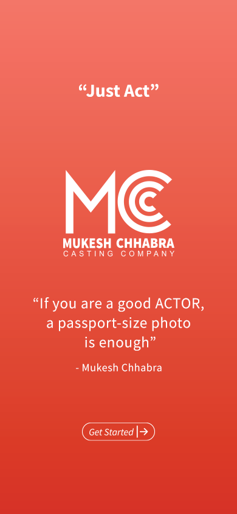

<div class="wrrpperHomeScreen">
    <div class="logos">
      
    </div>
    <div class="bottomContent">
      <!-- <h1><i class="fas fa-quote-left"></i> Just Act <i class="fas fa-quote-right"></i></h1>
      <p>Welcome Actors!,<br>We’re Now Successfully Featuring In Gujarati, Marathi, Punjabi, Tamil, Telugu, Kannada, Bhojpuri, Malayalam.</p>
      <a [routerLink]="['/signin-signup']" class=""> <span><i>Get Started</i></span>
        <ion-icon name="arrow-forward-outline"></ion-icon>
      </a> -->
      <a [routerLink]="['/signin-signup']" class=""style="margin: 0;
      padding: 0;
      border-radius: 0;
      border: initial;"></a>
    </div>
  </div>